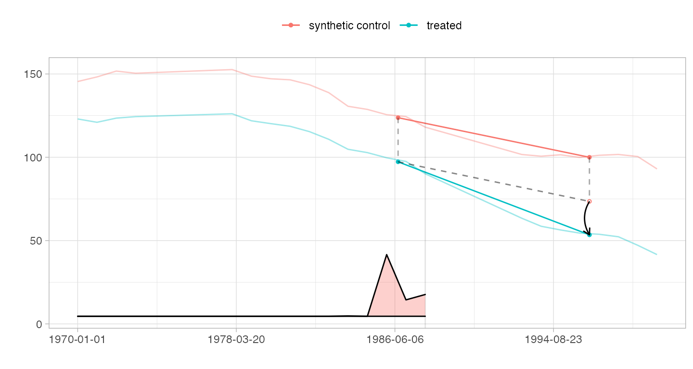
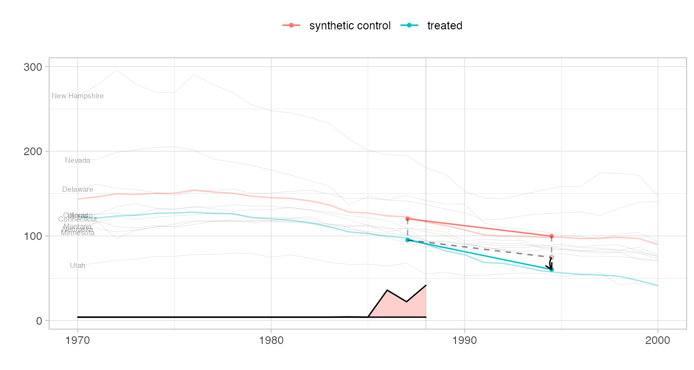
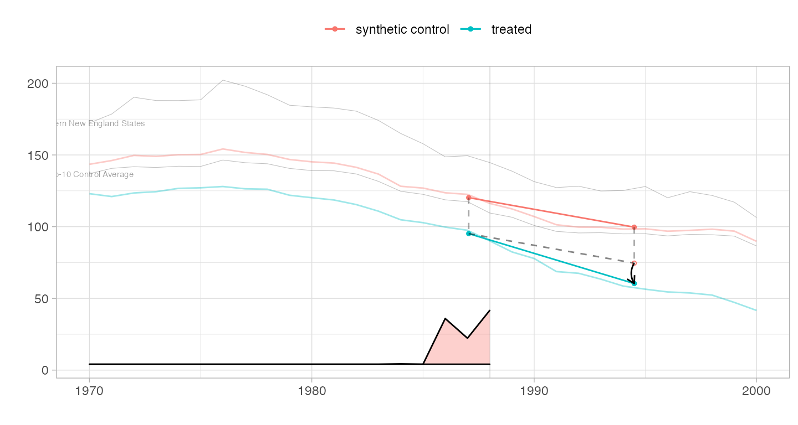
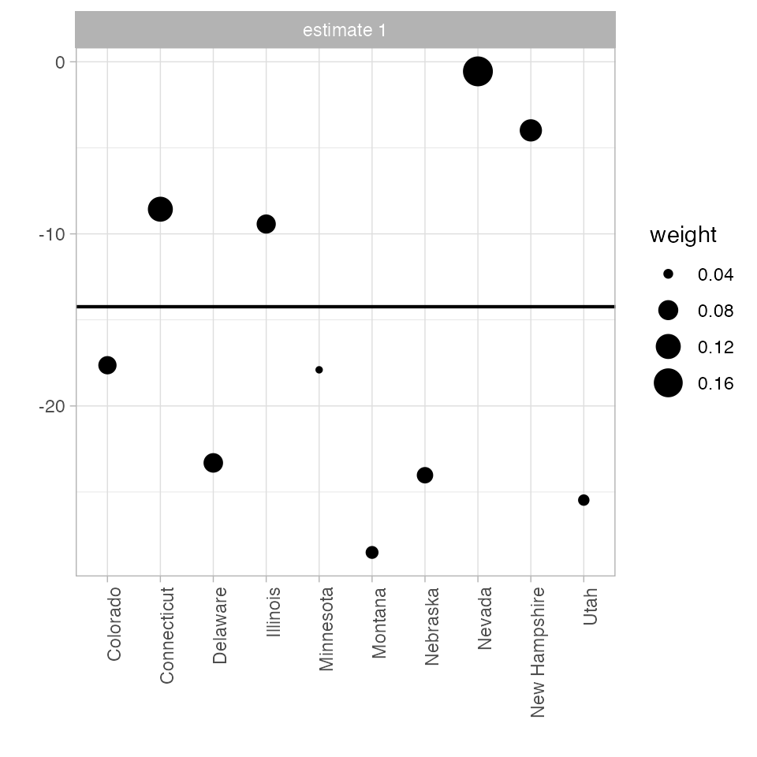
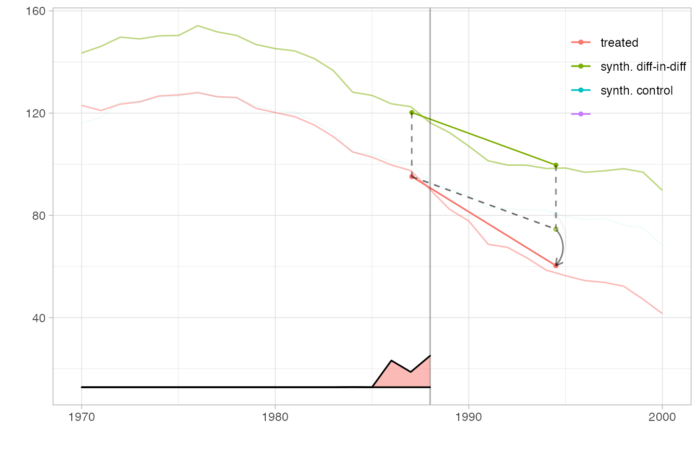

Sometimes we want to use dates as timesteps. We store timesteps as the colnames of Y, and colnames can’t be Date objects, so to work around this we can use strings convertible to dates via as.Date. Functions in the package, like the plotting functions, are aware of this convention, so the dates get displayed correctly, with correct spacing is retained when intervals vary. Note the long linear sections where we’re drawing the segment between 1973 and 1978 and 1988-1993.
data(california_prop99) california_prop99$date = as.Date(sprintf('%04d/%02d/%02d', california_prop99$Year, 1, 1)) setup = panel.matrices(california_prop99[! california_prop99$Year %in% c(1974:1977, 1989:1992),], time='date') estimate = synthdid_estimate(setup$Y, setup$N0, setup$T0) plot(estimate)

We can include the trajectories of individual controls on our parallel trends diagram. Here we plot the 10 controls with the largest weights \(\omega_i\). We’ll go back to the regularly spaced data from here on.
setup = panel.matrices(california_prop99) estimate = synthdid_estimate(setup$Y, setup$N0, setup$T0) top.controls = synthdid_controls(estimate)[1:10, , drop=FALSE] plot(estimate, spaghetti.units=rownames(top.controls))

We can also pass trajectories of our choice, for example aggregates of controls. With fewer of these trajectories, we can make the lines a little more opaque without them getting distracting.
northern.new.england = c('New Hampshire', 'Vermont', 'Maine') spaghetti.matrices = rbind(colMeans(setup$Y[rownames(setup$Y) %in% northern.new.england, ]), colMeans(setup$Y[rownames(setup$Y) %in% rownames(top.controls), ])) rownames(spaghetti.matrices) = c('Northern New England States', 'Top-10 Control Average') plot(estimate, spaghetti.matrices=list(spaghetti.matrices), spaghetti.line.alpha=.4)

When we have too many control units, the control unit contribution plot can be too dense to read. We can restrict the units we plot by passing a list of names.
synthdid_units_plot(estimate, units = rownames(top.controls))

We can even overlay multiple estimates in one plot and include a magnified view of some regions. We create a flipbook in which we bring synthetic diff-in-diff’s control closer to California’s trajectory to we can see how parallel it is clearly, overlay it completely so we can better compare it to the ADH synthetic control method’s synthetic control, plot the ADH synthetic control estimate, and zoom in on a region around treatment onset in which we can see the ADH synthetic control possibly begin to diverge from California’s trajectory.
Because we display multiple estimates, we cannot use the overlay parameter to slide synthetic diff-in-diff’s control toward California. Instead, we pass this parameter as an attribute ‘overlay’ of the estimator, which overrides the function argument and is interpreted the same way. Including an invisible (via alpha.multiplier) copy of tau.hat keeps the axes of the plot from changing as the visible one’s control trajectory moves.
estimate.sc = sc_estimate(setup$Y, setup$N0, setup$T0) with.overlay = function(est, s) { attr(est,'overlay') = s; est } estimators = function(s) { estimator.list = list(with.overlay(estimate, s), estimate.sc, estimate) names(estimator.list)=c('synth. diff-in-diff', 'synth. control', '') estimator.list } plot.estimators = function(ests, alpha.multiplier) { p = synthdid_plot(ests, se.method='none', alpha.multiplier=alpha.multiplier, facet=rep(1,length(ests)), trajectory.linetype = 1, effect.curvature=-.4, trajectory.alpha=.5, effect.alpha=.5, diagram.alpha=1) suppressMessages(p + scale_alpha(range=c(0,1), guide='none')) # scale alpha so alpha=0 means totally invisible, which is unusual but useful # for hiding our invisible estimate. We have to suppress a warning that # we're overriding an extant alpha scale that's added in synthdid_plot } # set up the box we zoom in on in plot 5 lambda = attr(estimate, 'weights')$lambda time = as.integer(timesteps(setup$Y)) xbox.ind = c(which(lambda > .01)[1], setup$T0+4) xbox = time[xbox.ind] + c(-.5,.5) ybox = range(setup$Y[setup$N0+1, min(xbox.ind):(max(xbox.ind))]) + c(-4,4) p1 = plot.estimators(estimators(0), alpha.multiplier=c(1,.1,0)) p2 = plot.estimators(estimators(.75), alpha.multiplier=c(1,.1,0)) p3 = plot.estimators(estimators(1), alpha.multiplier=c(1,.1,0)) p4 = plot.estimators(estimators(1), alpha.multiplier=c(1, 1,0)) p4.zoom = p4 + coord_cartesian(xlim=xbox, ylim=ybox) + xlab('') + ylab('') + theme(axis.ticks.x= element_blank(), axis.text.x = element_blank(), axis.ticks.y=element_blank(), axis.text.y=element_blank(), legend.position='off') p5 = p4 + annotation_custom(ggplotGrob(p4.zoom), xmin = 1968, # location by xmax = 1984.7, ymin=2, ymax=95) + # trial and error geom_rect(aes(xmin=min(xbox), xmax=max(xbox), ymin=min(ybox), ymax=max(ybox)), color=alpha('black', .25), size=.3, fill=NA) plot.theme = theme(legend.position=c(.9,.85), legend.direction='vertical', legend.key=element_blank(), legend.background=element_blank()) p1 + plot.theme
p2 + plot.theme
p3 + plot.theme
p4 + plot.theme
p5 + plot.theme
